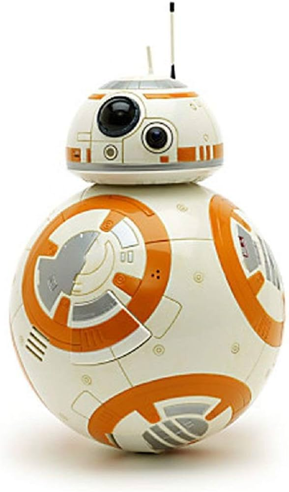

BB-8
Con la llegada del episodio VII “El Despertar de la Fuerza” llegaron nuevos personajes, entre ellos BB-8, un droide astromecanico como ninguno hasta el momento. Su interacción con Poe, Rey y Finn fue increíble. Todos queríamos un BB-8 en nuestras vidas.
